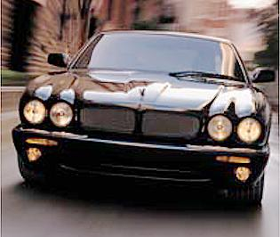
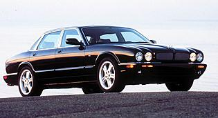

Jaguar XJR



Specs
Price |
$67,400 |
Top Speed |
155mph(electronically limited) |
Acceleration |
|
Engine |
|
0-30mph |
2.0sec |
Type |
Supercharged V8, 32valve DOHC |
0-60mph |
5.2sec |
Displacement |
4.0L(3996cc) |
0-100 |
12.8sec |
Power |
370hp@6150rpm |
1/4 mile |
13.7sec/103.8mph |
Torque |
387 lbs-ft@3600rpm |
Weight |
4,026 lbs |
Handling |
|
Gas mileage |
|
Skidpad |
.88g |
City |
16mpg |
600ft slalom |
65.3mph |
Highway |
22mpg |
Powertrain |
Front engined, rear wheel drive, 5 speed automatic |
(? = incomplete data or unverified info, N/A = info Not Available)
Beyond the specs:
The amazing musclecar eating Jaguar sedan, the only sports sedan offered by Jaguar and the only sports that offers a true Jaguar interior. Speed is not an attribute many expect from a Jaguar sedan, but anyone who tries out this machine will quickly forget that they ever doubted a Jaguar sedan's ability to burn rubber. This car will easily embarrass any Camaro or Mustang owner you thinks their car is faster that this large 2 ton Jaguar sedan. It does suffer from a few problems though, it supercharger whines at high rpm, its brakes are only adequate, and it does not come with any kind of stability control likes its competitors. Also, don't expect to get the kind of road feel you can find in a BMW for despite the quick ratio steering its light weight feel makes it bad for "spirited" driving. Fortunately it is cheaper than its competitors, and being the longer than its competitors it has more interior space. Another plus for those who like oversteer is that this car can safely and easily swing its tail out if asked, just watch out for traffic and that concrete barrier. This car is a combination of understatement (few visual changes from the regular XJ8), Jaguar luxury, quality, and performance unheard of in a Jaguar sedan. After all, what do you expect when you take the luxurious XJ8 sedan and attach a supercharger to its wonderful smooth 290hp Jaguar V8 power plant.
~Oracle